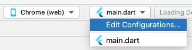
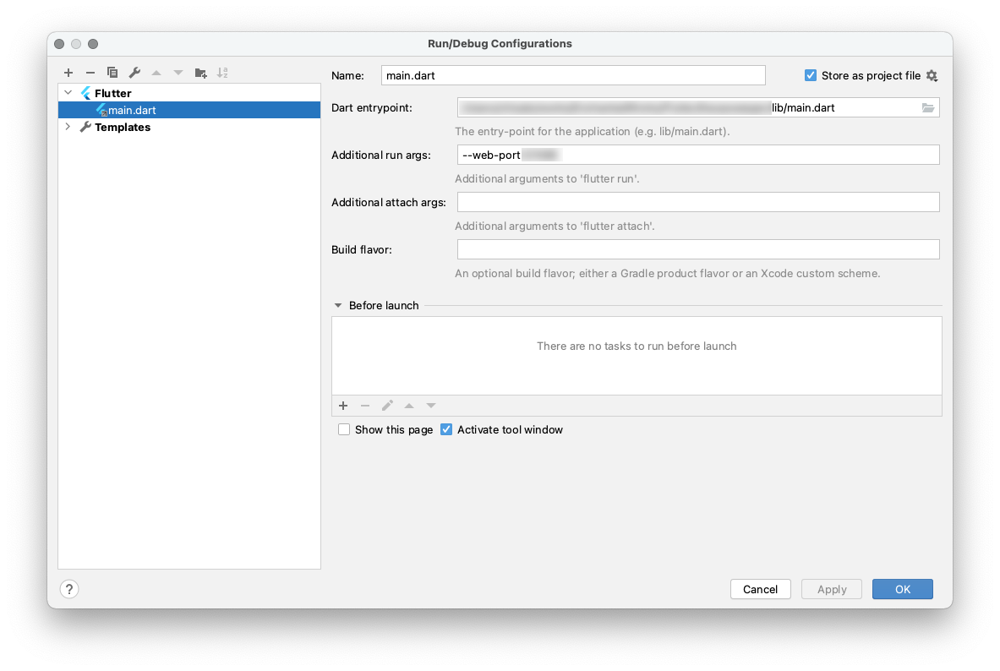
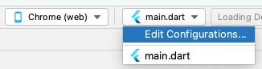
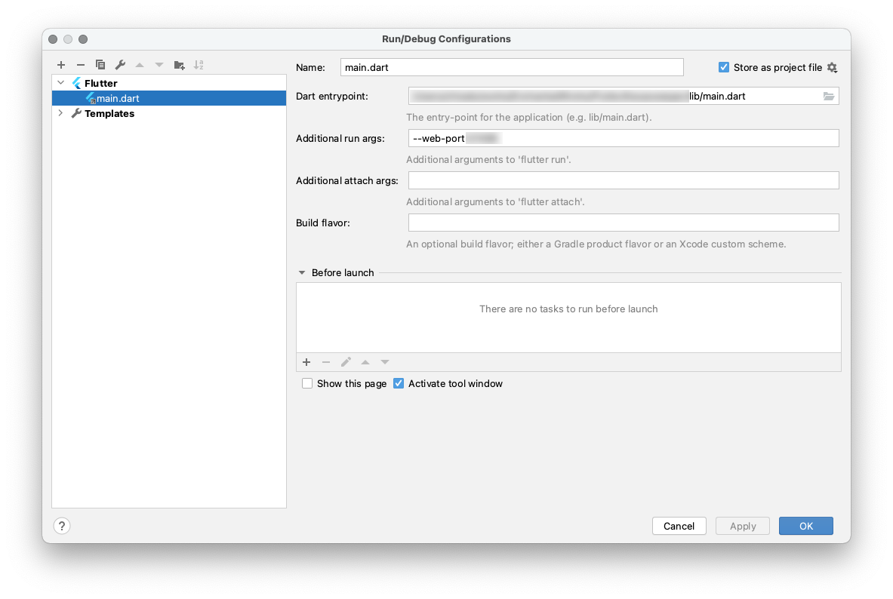

Chrome実行時のポート指定
Created at : 2021/06/21
環境
作業した時点でのツールなどのバージョン
- Android Studio 4.2.1
設定のしかた
Android StudioでEdit Configurations ダイアログを開く。
Additional run args に --web-port xxxxx(ポート番号) を設定する。
<この設定をしなくても、Chromeで実行した時に自動でポートが割当たるよ。/p>
Created at : 2021/06/21
作業した時点でのツールなどのバージョン
Android StudioでEdit Configurations ダイアログを開く。
Additional run args に --web-port xxxxx(ポート番号) を設定する。
<この設定をしなくても、Chromeで実行した時に自動でポートが割当たるよ。/p>